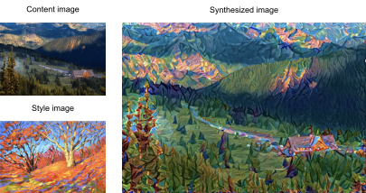
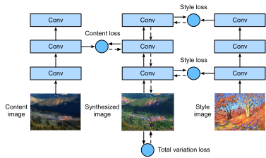

14.12. 神经样式迁移¶
如果你是一名摄影爱好者， 你可能对滤镜并不陌生。 滤镜可以改变照片的色调， 使风景照片变得更锐利， 或使人像照片的皮肤更白皙。 然而， 一个滤镜通常只能改变 照片的一个方面。 要想给照片应用一个理想的样式， 你可能需要 尝试许多不同的滤镜组合。 这个过程 与为模型调参一样复杂。
本节中，我们将 利用 CNN 的逐层表示， 自动地把一幅图像的样式 应用到另一幅图像上，即样式迁移（style transfer）:cite:Gatys.Ecker.Bethge.2016。 该任务需要两幅输入图像： 一幅是内容图像（content image）， 另一幅是样式图像（style image）。 我们将使用神经网络 修改内容图像， 使其在样式上接近样式图像。 例如， 图14.12.1 中的内容图像是我们在西雅图郊外的 雷尼尔山国家公园拍摄的风景照， 而样式图像是一幅 以秋日橡树为主题的油画。 在输出的合成图像中， 应用了样式图像的 油画笔触，使色彩更加鲜艳， 同时保留了内容图像中 目标的主要形状。

图14.12.1 给定内容图像和样式图像，样式迁移输出一幅合成图像。¶
14.12.1. 方法¶
图14.12.2 用一个简化的例子 说明了基于 CNN 的样式迁移方法。 首先，我们初始化合成图像， 例如将其初始化为内容图像。 该合成图像是样式迁移过程中需要更新的唯一变量， 即训练过程中需要更新的模型参数。 然后，我们选择一个预训练的 CNN 来提取图像特征， 并在训练过程中固定其 模型参数。 这个深度 CNN 使用多个层 来提取 图像的层次化特征。 我们可以选择其中一些层的输出作为内容特征或样式特征。 以 图14.12.2 为例。 这里的预训练神经网络有 3 个卷积层， 其中第二层输出内容特征， 第一层和第三层输出样式特征。

图14.12.2 基于 CNN 的样式迁移过程。实线表示前向传播方向，虚线表示反向传播方向。¶
接下来，我们通过前向传播（实线箭头方向）计算样式迁移的损失函数，并通过反向传播（虚线箭头方向）更新模型参数（即用于输出的合成图像）。 样式迁移中常用的损失函数由三部分组成： （i）内容损失（content loss）使合成图像与内容图像在内容特征上接近； （ii）样式损失（style loss）使合成图像与样式图像在样式特征上接近； （iii）全变分损失（total variation loss）有助于减少合成图像中的噪声。 最后，当模型训练结束时，我们输出样式迁移的模型参数，以生成 最终的合成图像。
下面， 我们将通过一个具体实验来解释样式迁移的技术细节。
14.12.2. 读取内容和样式图像¶
首先，我们读取内容和样式图像。 从打印出的坐标轴可以看出， 这两幅图像的尺寸不同。
%matplotlib inline
import torch
import torchvision
from torch import nn
from d2l import torch as d2l
d2l.set_figsize()
content_img = d2l.Image.open('../img/rainier.jpg')
d2l.plt.imshow(content_img);
style_img = d2l.Image.open('../img/autumn-oak.jpg')
d2l.plt.imshow(style_img);
%matplotlib inline
from mxnet import autograd, gluon, image, init, np, npx
from mxnet.gluon import nn
from d2l import mxnet as d2l
npx.set_np()
d2l.set_figsize()
content_img = image.imread('../img/rainier.jpg')
d2l.plt.imshow(content_img.asnumpy());
style_img = image.imread('../img/autumn-oak.jpg')
d2l.plt.imshow(style_img.asnumpy());
14.12.3. 预处理和后处理¶
下面，我们定义两个函数，分别用于图像的预处理和后处理。 preprocess
函数对输入图像的 三个 RGB 通道分别进行标准化，并把结果变换为 CNN
输入格式。 postprocess
函数把输出图像中的像素值恢复为标准化之前的原始值。
由于图像打印函数要求每个像素的浮点值在 0 到 1 之间， 我们把小于 0 或大于
1 的值分别替换为 0 或 1。
rgb_mean = torch.tensor([0.485, 0.456, 0.406])
rgb_std = torch.tensor([0.229, 0.224, 0.225])
def preprocess(img, image_shape):
transforms = torchvision.transforms.Compose([
torchvision.transforms.Resize(image_shape),
torchvision.transforms.ToTensor(),
torchvision.transforms.Normalize(mean=rgb_mean, std=rgb_std)])
return transforms(img).unsqueeze(0)
def postprocess(img):
img = img[0].to(rgb_std.device)
img = torch.clamp(img.permute(1, 2, 0) * rgb_std + rgb_mean, 0, 1)
return torchvision.transforms.ToPILImage()(img.permute(2, 0, 1))
rgb_mean = np.array([0.485, 0.456, 0.406])
rgb_std = np.array([0.229, 0.224, 0.225])
def preprocess(img, image_shape):
img = image.imresize(img, *image_shape)
img = (img.astype('float32') / 255 - rgb_mean) / rgb_std
return np.expand_dims(img.transpose(2, 0, 1), axis=0)
def postprocess(img):
img = img[0].as_in_ctx(rgb_std.ctx)
return (img.transpose(1, 2, 0) * rgb_std + rgb_mean).clip(0, 1)
14.12.4. 提取特征¶
我们使用在 ImageNet 数据集上预训练的 VGG-19 模型来提取图像特征 (Gatys et al., 2016)。
pretrained_net = torchvision.models.vgg19(pretrained=True)
pretrained_net = gluon.model_zoo.vision.vgg19(pretrained=True)
为了提取图像的内容特征和样式特征，我们可以选择 VGG 网络中某些层的输出。
一般来说，越靠近输入层，越容易提取图像的细节；反之，越容易提取图像的全局信息。为了避免在合成图像中
过度保留内容图像的细节， 我们选择较靠近输出的 VGG
层作为内容层（content layer），以输出图像的内容特征。
我们还选择不同 VGG 层的输出来提取局部和全局的样式特征。
这些层也称为样式层（style layer）。 如 8.2节
中所提到的， VGG 网络使用 5 个卷积块。
在实验中，我们选择第四个卷积块的最后一个卷积层作为内容层，并选择每个卷积块的第一个卷积层作为样式层。
这些层的索引可以通过打印 pretrained_net 实例得到。
style_layers, content_layers = [0, 5, 10, 19, 28], [25]
style_layers, content_layers = [0, 5, 10, 19, 28], [25]
使用 VGG 层提取特征时， 我们只需要使用从输入层到
最靠近输出层的内容层或样式层之间的所有层。 让我们构造一个新的网络实例
net，它只保留 用于特征提取的所有 VGG 层。
net = nn.Sequential(*[pretrained_net.features[i] for i in
range(max(content_layers + style_layers) + 1)])
net = nn.Sequential()
for i in range(max(content_layers + style_layers) + 1):
net.add(pretrained_net.features[i])
给定输入 X，如果我们只是调用 前向传播
net(X)，就只能得到最后一层的输出。 由于我们还需要中间层的输出，
因此需要逐层计算，并保留 内容层和样式层的输出。
def extract_features(X, content_layers, style_layers):
contents = []
styles = []
for i in range(len(net)):
X = net[i](X)
if i in style_layers:
styles.append(X)
if i in content_layers:
contents.append(X)
return contents, styles
def extract_features(X, content_layers, style_layers):
contents = []
styles = []
for i in range(len(net)):
X = net[i](X)
if i in style_layers:
styles.append(X)
if i in content_layers:
contents.append(X)
return contents, styles
下面定义两个函数： get_contents 函数从内容图像中提取内容特征，
get_styles 函数从样式图像中提取样式特征。
由于训练过程中不需要更新预训练 VGG 的模型参数，
我们甚至可以在训练开始之前 就提取内容特征和样式特征。 由于合成图像
是样式迁移中需要更新的一组 模型参数， 因此我们只能在训练过程中通过调用
extract_features 函数来提取合成图像的内容特征和样式特征。
def get_contents(image_shape, device):
content_X = preprocess(content_img, image_shape).to(device)
contents_Y, _ = extract_features(content_X, content_layers, style_layers)
return content_X, contents_Y
def get_styles(image_shape, device):
style_X = preprocess(style_img, image_shape).to(device)
_, styles_Y = extract_features(style_X, content_layers, style_layers)
return style_X, styles_Y
def get_contents(image_shape, device):
content_X = preprocess(content_img, image_shape).copyto(device)
contents_Y, _ = extract_features(content_X, content_layers, style_layers)
return content_X, contents_Y
def get_styles(image_shape, device):
style_X = preprocess(style_img, image_shape).copyto(device)
_, styles_Y = extract_features(style_X, content_layers, style_layers)
return style_X, styles_Y
14.12.5. 定义损失函数¶
现在我们将描述样式迁移的损失函数。该损失函数由 内容损失、样式损失和全变分损失组成。
14.12.5.1. 内容损失¶
与线性回归中的损失函数类似， 内容损失通过 平方损失函数
衡量合成图像与内容图像 在内容特征上的差异。 平方损失函数的两个输入 都是
内容层经 extract_features 函数计算得到的输出。
def content_loss(Y_hat, Y):
# We detach the target content from the tree used to dynamically compute
# the gradient: this is a stated value, not a variable. Otherwise the loss
# will throw an error.
return torch.square(Y_hat - Y.detach()).mean()
def content_loss(Y_hat, Y):
return np.square(Y_hat - Y).mean()
14.12.5.2. 样式损失¶
样式损失与内容损失类似，
也使用平方损失函数来衡量合成图像与样式图像在样式上的差异。
为了表示任意样式层的样式输出， 我们首先使用 extract_features 函数
计算样式层的输出。 假设该输出有 1 个样例、\(c\) 个通道、 高度
\(h\) 和宽度 \(w\)， 我们可以把这个输出变换为 具有 \(c\)
行和 \(hw\) 列的矩阵 \(\mathbf{X}\)。 这个矩阵可以看作
\(c\) 个向量 \(\mathbf{x}_1, \ldots, \mathbf{x}_c\) 的 连结，
其中每个向量的长度为 \(hw\)。 这里，向量 \(\mathbf{x}_i\)
表示通道 \(i\) 的样式特征。
在这些向量的格拉姆矩阵（Gram
matrix）\(\mathbf{X}\mathbf{X}^\top \in \mathbb{R}^{c \times c}\)
中，第 \(i\) 行第 \(j\) 列的元素 \(x_{ij}\) 是向量
\(\mathbf{x}_i\) 与 \(\mathbf{x}_j\) 的点积。 它表示通道
\(i\) 和 \(j\) 的样式特征的相关性。
我们用这个格拉姆矩阵来表示任意样式层的样式输出。 请注意，当 \(hw\)
的值较大时， 格拉姆矩阵中的值可能也会较大。
还要注意，格拉姆矩阵的高度和宽度都是通道数 \(c\)。
为了使样式损失不受 这些值的影响， 下面的 gram 函数把
格拉姆矩阵除以其元素个数，即 \(chw\)。
def gram(X):
num_channels, n = X.shape[1], X.numel() // X.shape[1]
X = X.reshape((num_channels, n))
return torch.matmul(X, X.T) / (num_channels * n)
def gram(X):
num_channels, n = X.shape[1], d2l.size(X) // X.shape[1]
X = X.reshape((num_channels, n))
return np.dot(X, X.T) / (num_channels * n)
显然， 样式损失所用平方损失函数的两个格拉姆矩阵输入分别基于
合成图像和样式图像的 样式层输出。 这里假设基于样式图像的格拉姆矩阵
gram_Y 已经预先计算好。
def style_loss(Y_hat, gram_Y):
return torch.square(gram(Y_hat) - gram_Y.detach()).mean()
def style_loss(Y_hat, gram_Y):
return np.square(gram(Y_hat) - gram_Y).mean()
14.12.5.3. 全变分损失¶
有时候，学到的合成图像 会有很多高频噪声， 即特别亮或特别暗的像素。 一种常见的降噪方法是 全变分去噪（total variation denoising）。 记 \(x_{i, j}\) 为坐标 \((i, j)\) 处的像素值。 减小全变分损失
可以使合成图像上相邻像素的值更加接近。
def tv_loss(Y_hat):
return 0.5 * (torch.abs(Y_hat[:, :, 1:, :] - Y_hat[:, :, :-1, :]).mean() +
torch.abs(Y_hat[:, :, :, 1:] - Y_hat[:, :, :, :-1]).mean())
def tv_loss(Y_hat):
return 0.5 * (np.abs(Y_hat[:, :, 1:, :] - Y_hat[:, :, :-1, :]).mean() +
np.abs(Y_hat[:, :, :, 1:] - Y_hat[:, :, :, :-1]).mean())
14.12.5.4. 损失函数¶
样式迁移的损失函数是内容损失、样式损失和全变分损失的加权和。 通过调整这些权重超参数， 我们可以在 合成图像的内容保留、 样式迁移 和降噪之间进行权衡。
content_weight, style_weight, tv_weight = 1, 1e4, 10
def compute_loss(X, contents_Y_hat, styles_Y_hat, contents_Y, styles_Y_gram):
# Calculate the content, style, and total variance losses respectively
contents_l = [content_loss(Y_hat, Y) * content_weight for Y_hat, Y in zip(
contents_Y_hat, contents_Y)]
styles_l = [style_loss(Y_hat, Y) * style_weight for Y_hat, Y in zip(
styles_Y_hat, styles_Y_gram)]
tv_l = tv_loss(X) * tv_weight
# Add up all the losses
l = sum(styles_l + contents_l + [tv_l])
return contents_l, styles_l, tv_l, l
content_weight, style_weight, tv_weight = 1, 1e4, 10
def compute_loss(X, contents_Y_hat, styles_Y_hat, contents_Y, styles_Y_gram):
# Calculate the content, style, and total variance losses respectively
contents_l = [content_loss(Y_hat, Y) * content_weight for Y_hat, Y in zip(
contents_Y_hat, contents_Y)]
styles_l = [style_loss(Y_hat, Y) * style_weight for Y_hat, Y in zip(
styles_Y_hat, styles_Y_gram)]
tv_l = tv_loss(X) * tv_weight
# Add up all the losses
l = sum(styles_l + contents_l + [tv_l])
return contents_l, styles_l, tv_l, l
14.12.6. 初始化合成图像¶
在样式迁移中， 合成图像是训练过程中需要更新的唯一变量。
因此，我们可以定义一个简单的模型
SynthesizedImage，把合成图像当作模型参数。
在该模型中，前向传播只返回模型参数。
class SynthesizedImage(nn.Module):
def __init__(self, img_shape, **kwargs):
super(SynthesizedImage, self).__init__(**kwargs)
self.weight = nn.Parameter(torch.rand(*img_shape))
def forward(self):
return self.weight
class SynthesizedImage(nn.Block):
def __init__(self, img_shape, **kwargs):
super(SynthesizedImage, self).__init__(**kwargs)
self.weight = self.params.get('weight', shape=img_shape)
def forward(self):
return self.weight.data()
接下来，我们定义 get_inits 函数。
该函数创建一个合成图像模型实例，并将其初始化为图像 X。
样式图像在各样式层的格拉姆矩阵 styles_Y_gram 在训练之前就已计算好。
def get_inits(X, device, lr, styles_Y):
gen_img = SynthesizedImage(X.shape).to(device)
gen_img.weight.data.copy_(X.data)
trainer = torch.optim.Adam(gen_img.parameters(), lr=lr)
styles_Y_gram = [gram(Y) for Y in styles_Y]
return gen_img(), styles_Y_gram, trainer
def get_inits(X, device, lr, styles_Y):
gen_img = SynthesizedImage(X.shape)
gen_img.initialize(init.Constant(X), ctx=device, force_reinit=True)
trainer = gluon.Trainer(gen_img.collect_params(), 'adam',
{'learning_rate': lr})
styles_Y_gram = [gram(Y) for Y in styles_Y]
return gen_img(), styles_Y_gram, trainer
14.12.7. 训练¶
训练样式迁移模型时， 我们不断提取 合成图像的内容特征和样式特征，并计算损失函数。 下面定义训练循环。
def train(X, contents_Y, styles_Y, device, lr, num_epochs, lr_decay_epoch):
X, styles_Y_gram, trainer = get_inits(X, device, lr, styles_Y)
scheduler = torch.optim.lr_scheduler.StepLR(trainer, lr_decay_epoch, 0.8)
animator = d2l.Animator(xlabel='epoch', ylabel='loss',
xlim=[10, num_epochs],
legend=['content', 'style', 'TV'],
ncols=2, figsize=(7, 2.5))
for epoch in range(num_epochs):
trainer.zero_grad()
contents_Y_hat, styles_Y_hat = extract_features(
X, content_layers, style_layers)
contents_l, styles_l, tv_l, l = compute_loss(
X, contents_Y_hat, styles_Y_hat, contents_Y, styles_Y_gram)
l.backward()
trainer.step()
scheduler.step()
if (epoch + 1) % 10 == 0:
animator.axes[1].imshow(postprocess(X))
animator.add(epoch + 1, [float(sum(contents_l)),
float(sum(styles_l)), float(tv_l)])
return X
def train(X, contents_Y, styles_Y, device, lr, num_epochs, lr_decay_epoch):
X, styles_Y_gram, trainer = get_inits(X, device, lr, styles_Y)
animator = d2l.Animator(xlabel='epoch', ylabel='loss',
xlim=[10, num_epochs], ylim=[0, 20],
legend=['content', 'style', 'TV'],
ncols=2, figsize=(7, 2.5))
for epoch in range(num_epochs):
with autograd.record():
contents_Y_hat, styles_Y_hat = extract_features(
X, content_layers, style_layers)
contents_l, styles_l, tv_l, l = compute_loss(
X, contents_Y_hat, styles_Y_hat, contents_Y, styles_Y_gram)
l.backward()
trainer.step(1)
if (epoch + 1) % lr_decay_epoch == 0:
trainer.set_learning_rate(trainer.learning_rate * 0.8)
if (epoch + 1) % 10 == 0:
animator.axes[1].imshow(postprocess(X).asnumpy())
animator.add(epoch + 1, [float(sum(contents_l)),
float(sum(styles_l)), float(tv_l)])
return X
现在我们开始训练模型。 我们把内容和样式图像的高度和宽度缩放到 300×450 像素。 我们用内容图像来初始化合成图像。
device, image_shape = d2l.try_gpu(), (300, 450) # PIL Image (h, w)
net = net.to(device)
content_X, contents_Y = get_contents(image_shape, device)
_, styles_Y = get_styles(image_shape, device)
output = train(content_X, contents_Y, styles_Y, device, 0.3, 500, 50)
device, image_shape = d2l.try_gpu(), (450, 300)
net.collect_params().reset_ctx(device)
content_X, contents_Y = get_contents(image_shape, device)
_, styles_Y = get_styles(image_shape, device)
output = train(content_X, contents_Y, styles_Y, device, 0.9, 500, 50)
我们可以看到，合成图像 保留了内容图像的风景和目标， 同时迁移了样式图像的 颜色。 例如， 合成图像中有着与样式图像 类似的色块。 其中一些色块甚至带有微妙的笔触纹理。
14.12.8. 小结¶
样式迁移中常用的损失函数由三部分组成：（i）内容损失使合成图像与内容图像在内容特征上接近；（ii）样式损失使合成图像与样式图像在样式特征上接近；（iii）全变分损失有助于减少合成图像中的噪声。
我们可以使用预训练的 CNN 提取图像特征，并通过最小化损失函数，在训练过程中不断更新作为模型参数的合成图像。
我们使用格拉姆矩阵来表示样式层的样式输出。
14.12.9. 练习¶
当你选择不同的内容层和样式层时，输出会怎样变化？
调整损失函数中的权重超参数。输出会保留更多内容，还是噪声更少？
使用不同的内容图像和样式图像。你能创建更有趣的合成图像吗？
我们能否将样式迁移应用于文本？提示：你可以参考 Hu et al. (2022) 的综述论文。